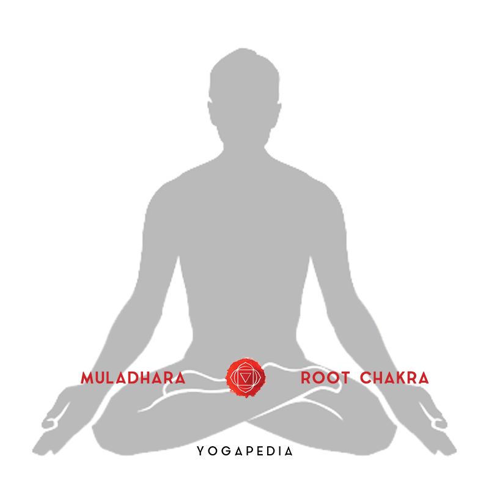

Muladhara Chakra - Root Chakra
Muladhara Chakra - Root Chakra
mula = root adhara = base, foundation
The Muladhara Chakra is situated at the base of the coccyx, it is the first of the human Chakras.
Its corresponding Mantra is LAM. The Muladhara Chakra forms the border between animal and human
consciousness. It is linked to the unconscious mind, where our actions and experience from past
lives are stored. Therefore according to Karmic Law, this Chakra contains the course of our future
destiny. This Chakra is also the foundation for the development of our personality.
The positive attributes of the Muladhara Chakra are vitality, vigour and growth. The negative
qualities are laziness, inertia, self-centredness and domination by one's physical desires.
The Divinity of this Chakra is Lord Shiva in his manifestation as “Master of the Animals” -
Pashupati Mahadeva - meaning that the lower qualities have been overcome.
In the symbolic picture of the Muladhara Chakra there is a Lotus with four petals. These represent
the four functions of the psyche: mind (Manas), intellect (Buddhi), consciousness (Chitta) and ego
(Ahamkara) - all of which originate in this Chakra.
Life is consciousness and consciousness strives for evolution. The symbols of the Muladhara Chakra
are characteristic of both energy and upward movement. The Chakra’s colour is red, the colour of
Shakti. Shakti means energy, movement, awakening and development. Red symbolises awakening of the
sleeping consciousness to active, alert consciousness. Another symbol of the Muladhara Chakra is the
inverted triangle, which has two meanings. One meaning suggests that the Cosmic energy is pulled in
and guided downwards, as if into a funnel. The other meaning indicates an upward expansion of
consciousness. The downward-pointing tip of the triangle is the starting point, the seed, and the
upward-moving sides of the triangle indicate the unfolding of consciousness towards human
consciousness.
The animal designated to represent the Muladhara Chakra is an Elephant with seven trunks. The
Elephant is a symbol of wisdom. The seven trunks symbolise the seven treasures of the earth
(Saptdhatu). The element of the Muladhara Chakra is Earth, our base and “mother”, which provides us
with energy and food.

The Characteristics of Muladhara Chakra
The earth element – Prithvi
The energies of the Root Chakra helps in recognizing our strong connection to the Earth. Keeping
us rooted to our inner self spreads positivity and happiness in life. It relates to our basic,
primal needs of survival, stability, and support. It also represents the structure of our body,
bones, flesh, and skin.
The strength of the red color
Each of the seven chakras has its own associated color. The main color of Root Chakra is red
which symbolizes primal instincts of strength and vitality. The red color is powerfully linked
to our physical and emotional needs of survival and self-preservation.
The physical focus of Muladhara Chakra
Food, water, shelter, and survival are our primary needs. The main focus of Muladhara Chakra is
to satisfy these basic needs. Overeating, hoarding of material items, and greed for money are a
few negative expressions for survival. These are the signs of an unbalanced Muladhara Chakra.
When our basic survival needs are not met, our Root Chakra becomes dysfunctional causing a
disconnection from our earthly values.
Emotional and mental health
A balanced root chakra can provide emotional strength like letting go of fear and anxiety. This
results in feeling grounded and secure. An imbalance in Root Chakra can cause a variety of
mental illnesses and stress which can also affect overall physical wellness.
Signs of a Blocked Muladhara Chakra
When the Muladhara Chakra is blocked and imbalanced, it can cause mental stress which is visible
through one’s physicality. The symptoms of a Muladhara Chakra imbalance are:
- Feelings of lethargy or depression
- Unable to take action and/or manifest intention
- Feelings of being disconnected and isolated
- Panic attacks or anxiety
- Health issues, such as problems in the colon, bladder, and lower back
- Unexplained aches and pains in the body
- Reproductive issues
- Insomnia
Positive affirmations for Swadhisthana chakra balance
Affirmations are a positive way to heal negative programming that can be embedded in the
subconscious. If there is negative programming present, then it is in itself the cause of chakra
imbalances. Affirmations can help to reprogram the subconscious with a positive mindset and
raise energy vibrations. Some affirmations that help alleviate Root Chakra include:
- I am safe and grounded
- I feel protected in this world.
- I nurture my body with what it needs to flourish.
- I am at home in my body
- I have a right to be here
- I am deeply rooted
- I am connected to my body
| Chakra Symbol |
 |
| Chakra Name |
Root Chakra |
| Chakra Sanskrit Name |
Muladhara |
| Chakra Location |
Base of Spine |
| Chakra Color |
Red |
| Chakra Seed Sound |
LAM |
| Chakra Element |
Earth |
| Chakra Affirmation |
I am |
| Chakra Gland |
Adrenal |